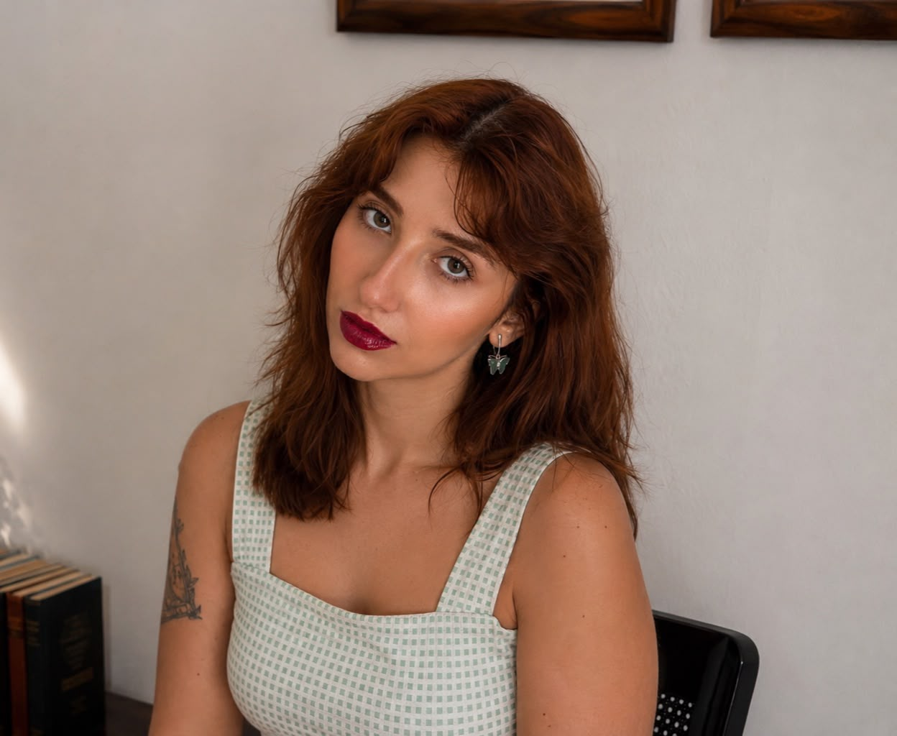

Em 2025, Carolyne e Júlia se conheceram. A afinidade profissional e a maneira semelhante como enxergavam o trabalho com autores deram origem à Caju: uma iniciativa criada para acolher, ouvir e respeitar a voz de cada escritor.

Leitora crítica e mentora literária, atuo no mercado editorial desde 2020. Sou formada em Letras e Pedagogia, com pós-graduação em Jornalismo. Minha trajetória começou a partir do estudo da escrita e da construção narrativa, mas rapidamente se transformou em algo maior: o acompanhamento de autores durante o desenvolvimento de suas obras.
Desde então, já trabalhei na análise de mais de 50 obras, entre romances, crônicas, contos e livros de não ficção, acompanhando textos de diferentes gêneros, propostas e estágios de desenvolvimento. Nos anos de 2020 e 2021, também me dediquei ao ensino de escrita criativa para autores iniciantes, com lives gratuitas que influenciam diretamente a maneira como trabalho com leitura crítica até hoje.
Para mim, analisar um manuscrito não significa apenas apontar aquilo que funciona ou não. Meu trabalho é compreender o que o autor pretende construir, identificar os caminhos que podem fortalecer aquela obra e, principalmente, explicar minhas observações de maneira que o autor compreenda as escolhas narrativas que está fazendo.
Apaixonada por livros, iniciei minha carreira como revisora em janeiro de 2025, logo após me formar em Jornalismo e me pós-graduar em Revisão de Textos. Comecei essa trajetória com a certeza das minhas capacidades e do meu amor pela gramática. Desde então, já atuei em mais de 30 obras dos mais diversos gêneros, incluindo trabalhos acadêmicos.
Crio conteúdo educativo para as redes sociais por acreditar que a educação transforma o mundo e deve ser acessível a todos. Em minhas revisões, faço questão de explicar aos autores o porquê de cada correção, ajudando-os a aprimorar sua escrita. Minha estreia na Bienal do Livro aconteceu já como revisora, o que tornou a realização desse sonho ainda mais especial.
Nosso trabalho deixou de ser individual: passamos a construir juntas uma proposta de acompanhamento editorial que une diferentes olhares sobre um mesmo manuscrito e acompanha o autor em diferentes etapas do desenvolvimento da obra.
Cada manuscrito pede um tipo de intervenção diferente. Por isso, antes de qualquer proposta, lemos o seu texto com atenção — e só então sugerimos o caminho editorial mais adequado.
Cada projeto que chega até a Caju carrega uma intenção, uma história e um cuidado que merecem ser honrados. Aqui, você encontra as vozes de autores que vivenciaram nossos processos de leitura crítica e revisão. Estas etapas caminham lado a lado para fortalecer narrativas, polir a linguagem e revelar o melhor de cada obra.
Estes depoimentos são o reflexo das parcerias que construímos: textos que amadurecem, autores que crescem e livros que encontram sua forma mais clara, precisa e potente.
Já começo dizendo que AMEI a sua leitura crítica.
Lanna · Conto · Leitura crítica
O relatório que você entregou foi completo, cuidadoso, atento e deu pra ver que vc realmente estava comprometida com o meu livro. A sensação que tive foi de ler uma resenha sensível e madura, nenhum pouco genérica ou automática.
De verdade: foi um trabalho feito com cuidado, atenção, sensibilidade e profissionalismo.
Muito obrigada! Eu amei a sua leitura crítica e com certeza vou contratá-la para os meus próximos livros 💖
Com certeza você já tem um feedback maravilhoso Carol. Desde o início, por seu profissionalismo, a sua preocupação em esclarecer o teu trabalho... Nossa, sem palavras!
Matheus · Contos · Leitura crítica
Parabéns mesmo Carol, porque hoje em dia tem muitas pessoas trabalhando no mercado literário, mas está complicado encontrar aquelas que levam realmente a sério
Fico muito feliz por ter te encontrado. Desde o primeiro vídeo que vi, já me conectei com você e não me enganei. Você é aquela profissional que a gente precisa muito e entrega tudo e ainda mais.
E com certeza, essa é só nossa primeira parceria de muitas ❤️
Aiii, muito obrigada 🤩 Tô amando reescrever, vocês são ótimas. Como falei, na primeira leitura crítica que fiz, nem cheguei a terminar de ler os comentários porque fiquei muito ansiosa. Fico muito feliz com a forma como vocês trabalham
Jéssica · Romance · Leitura crítica e revisão gramatical
Oi gurias. Queria avisar que terminei de revisar as revisões. Gostei muito do trabalho de vocês, principalmente porque me ensinou muitas coisas sobre escrita que não fazia parte do meu universo. Agora qual o próximo passo?
Diogo · Livro de não ficção · Leitura crítica e revisão gramatical
Boa noite, Ju, desculpe o horário. Consegui agora terminar de ver a sua revisão e estou muito satisfeita. Quero te agradecer por todo o trabalho e pela paciência! ... Quando o próximo estiver pronto, espero que possa ser a revisora também. Obrigada :)
Maria · Fantasia · Revisão gramatical
Já li e reescrevi tudo
Lanna · Conto · Leitura crítica
Eu já disse o quanto amo seus comentários????
Sério, não sei o que melhor: as correções, os comentários ou o relatório
Queria começar te agradecendo pelo serviço! Tinha boas expectativas por já acompanhar o seu trabalho nas redes e elas foram superadas!
Carolina · Fantasia urbana · Leitura crítica
Os relatórios estavam super bem detalhados, as suas explicações de o que funciona e o que não funciona estavam super didáticas, ótimas dicas também de como reescrever e aprimorar!
Estou agora trabalhando em revisar essa primeira parte e tenho certeza que muitos apontamentos vão me ajudar bastante nas próximas!
aii, eu fiquei muito feliz, ca!!
Júlia · Fantasia urbana · Leitura crítica e revisão gramatical
mesmo sendo meu primeiro livro, eu percebi que dei muito trabalho para vocês, kkk 🙈, mas aprendi demais com as correções e com os olhares que tiveram. agradeço demais o cuidado e carinho que tiveram com o meu texto. eu estava na dúvida se tinha muitos furos ou coisas assim, também, então me de um alívio que era mais a parte de fluidez do texto mesmo.
obrigada demais ❤️ e a julia tb!
teve uma hora que eu suspirei aliviada quando a julia disse que estava gostando. pensei 'yes, quebrei o gelo com ela' kkkkk.
vcs são demais ❤️
Júlia, acabei de fazer todos os ajustes no livro. Amei o seu trabalho! Parabéns ❤️
Karol · Livro-reportagem · Revisão gramatical
Vamos trabalhar em outros projeto já já, viu? 😍
Meninas, feedback sobre a organização: é a minha experiência favorita até agr com a Caju, muitooo legal esse metodo
Olivia · Comédia romântica · Leitura crítica e revisão gramatical
Carol, queria te agradecer de coração pela leitura crítica. Deu pra sentir o cuidado em cada detalhe, a atenção real que você teve com a história e o carinho nas observações. Sério, fez toda a diferença pra mim. Obrigada mesmo pela dedicação e por dividir o seu olhar comigo.
Lanna · Prosa poética · Leitura crítica
Terminei as alterações e, no fim, gostei mais do processo do que imaginava. Agora, escrevendo o restante, me pego várias vezes pensando antes de digitar: “a Carol pontuaria pra eu tentar outro gesto” ou “a Carol gritaria pra eu escolher um verbo melhor”.
Carolina · Fantasia urbana · Leitura crítica
Acabei de ler o relatório. Adorei esse modelo! Aprofunda bem as suas impressões sobre os capítulos. Achei perfeito. Também fica mais fácil de saber o que está coerente ou não.
Isabella · Fantasia · Leitura crítica
Só queria enaltecer. Já conhecia o trabalho da Júlia e sei que ela é braba. Você também é!
Olivia · Comédia romântica · Leitura crítica e revisão gramatical